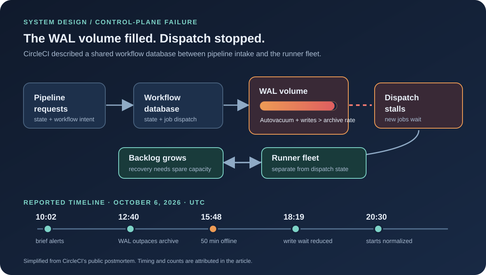

1. The Build Passed in Your Head. CircleCI Never Started It.
CircleCI's October 6 incident was not a compiler failure. It was a coordination failure. Customers could submit pipelines, but the service that records pipeline and workflow state and decides which jobs are ready could not keep up. For 50 minutes, no new workflows or jobs started. For part of that interval, newly triggered pipelines failed outright.
The distinction matters in CI. A runner can be healthy and idle while the control plane that hands it work is stuck. CircleCI's report describes jobs, workflows, UI data, notifications, webhooks and version-control status updates all being delayed by the same orchestration-side failure. The execution fleet was downstream of a database-backed queue; adding runners could not make that database accept work.
2. The Architecture: Durable State Before the Runner
CircleCI describes a workflow orchestration service between pipeline creation and execution. It tracks workflow and job state, chooses what is ready, then hands jobs to an execution fleet. The same path supplies job data to the UI and drives completion notifications and commit statuses.
That state lives in a database. Each write is first recorded in a transaction log, then applied to the database. The log is archived continuously so its disk space can be reused. That sequence protects durable state, but it also means log generation, archival throughput and free space are operational dependencies for starting work.
There is an important product boundary here: the report says already-running workloads were not the direct failure mode. The orchestration control path could not reliably move new work through the system. This is why separating execution capacity from workflow coordination is useful only if the latter can keep accepting state changes and dispatch decisions.
3. How Routine Vacuum Work Filled the WAL Disk
PostgreSQL autovacuum is routine maintenance, not an optional background nicety. CircleCI's report says an anti-wraparound autovacuum ran on several of its largest tables. On a very large table the process reads every page and produces a large volume of transaction logs. Around 12:40 UTC, this maintenance output plus normal application writes exceeded the rate at which the database could archive and reclaim the dedicated log volume.
The failure was a rate mismatch, not simply a database that had “too little disk.” If WAL is produced at rate g and archived at rate a, free space falls whenever g > a. Disk headroom buys time, but does not correct the mismatch. CircleCI did not publish those rates or the volume size, so the inequality explains the mechanism without pretending to reconstruct its capacity numbers.
Alerts began showing brief orchestration errors at 10:02. They cleared within about 15 minutes and looked similar to alerts responders had seen before. As the WAL volume filled, slowdowns became intermittent around 13:30, then continuous by 15:30. The incident was declared at 14:54. CircleCI's retrospective says the noisy, short-lived alerts and the absence of direct alerts on WAL volume and archive lag delayed recognition of the combined failure.
4. Why the Fix Took the Database Offline
At 15:43, the transaction-log volume was nearly full. A full WAL volume risked stopping database writes altogether. CircleCI chose to move the logs to the database's main data volume, which had more free space. That move required taking the database offline. It started at 15:47; between 15:48 and 16:38, the orchestration service processed no work.
From 16:02 UTC, newly triggered pipelines failed. During the same outage window, customers also saw delayed or missing UI data and notifications. CircleCI prepared a replacement database and a complete service stack while the original was down, but chose not to switch to the replacement because doing so risked data loss. That is a defensible recovery tradeoff: a warm replacement is not a safe failover unless its state and promotion procedure are trustworthy.
The move restored write availability but changed the storage shape. With ordinary database files and WAL on the same volume, the database ran at about half its normal processing rate. The queue did not vanish when the server process came back. It grew into the next bottleneck.
5. Recovery Was a Queueing Incident Too
At 18:19, engineers changed a database setting that reduced how long each write waited on storage. CircleCI says processing speed recovered, then it added database and application capacity to work down the backlog. New jobs were starting on time again by about 19:55. As the delayed work reached the execution fleet, Docker and Linux jobs saw another, smaller wait-time spike. Normal start times returned by about 20:30.
CircleCI reported about 3,500 jobs failed to start. It found no evidence that it ran a job more than once. A customer who manually retriggered a workflow while its original run was merely delayed could nevertheless see both finish. That is a valuable reminder: delayed status is not the same thing as failed execution. Idempotency and an authoritative workflow state matter most when the UI is behind reality.
| UTC, Oct 6 | What changed | System-design signal |
|---|---|---|
| 10:02 | Short-lived orchestration errors alert | Transient symptoms were familiar; direct WAL and archive-lag alerts were absent. |
| 12:40–15:30 | Large-table maintenance outpaced WAL archival; delays became continuous | Measure producer rate, archive rate and remaining time-to-full together. |
| 15:48–16:38 | Database offline to move log storage | Control-plane writes stopped; running jobs were not the same as dispatching new work. |
| 16:38–18:19 | Database returned at roughly half speed | Recovery throughput, not process health, determined backlog drain time. |
| 19:45–20:30 | Backlog pressure delayed some execution classes | Downstream capacity needs a recovery ramp, not just steady-state sizing. |
failed starts × rerun fraction × average billed minutes × runner price per minute. For the recovery queue, graph arrival rate and completion rate by resource class. CircleCI disclosed the failed-start count but not customer rerun behavior, job duration or price, so a dollar figure would be fiction.6. What the Postmortem Changes—and What I Would Add
CircleCI's stated actions map cleanly to the failure: alert on WAL volume and archival lag, alert on the maintenance process, tune autovacuum and track table growth. It also plans to reduce the single-log bottleneck by either splitting orchestration across databases or moving to a distributed database. Finally, it plans to stop downstream jobs from giving up while orchestration recovers and to make status updates more specific earlier.
I would add five operational guardrails around those commitments:
- Alert on time-to-full, not only percent full. Combine WAL generation, archive throughput, free bytes and the slope of the last hour. A disk at 65% with a steep rising slope can be more urgent than one at 90% that is draining.
- Load-test maintenance against peak writes. Rehearse anti-wraparound work on production-shaped tables while ordinary workload and archival are active. Track generated WAL per table and the slowest archiver path.
- Keep recovery storage independent. If emergency WAL relocation merges write traffic and data I/O, capacity-test the degraded state in advance. The incident shows that “more free space” can restore liveness and still cut throughput.
- Protect the workflow queue with explicit backpressure. Bound retries, preserve submission IDs, distinguish pending from failed, and ramp dispatch at the measured execution rate. Otherwise database recovery can create a second overload.
- Separate control-plane failure domains. If a sharded design is selected, partition ownership by customer or workload so a hot or maintenance-heavy tenant cannot block every pipeline. Document how state is replayed and how an incomplete shard is promoted before the next incident.
Splitting the log path is not free. It adds routing, cross-shard workflows, recovery procedures and consistency decisions. The objective is not “use a distributed database”; it is to cap how much orchestration state one maintenance backlog can hold hostage. A smaller, well-bounded blast radius is a better design target than an impressive product name.
7. The Postmortem Verdict
This incident had three distinct clocks: the WAL volume filled, the database was unavailable for 50 minutes, and the platform spent hours restoring normal job starts. Treating all three as “the database came back” would miss the actual customer experience.
The best part of CircleCI's disclosure is that it names the single transaction log as a bottleneck and admits its alerts did not expose volume exhaustion or archive lag. The architectural follow-through is still being evaluated. Until that boundary changes, the practical safeguards are workload-aware maintenance, direct saturation alerts, retry-safe orchestration and capacity-aware backlog drain.
The runners were ready. The log that told them what to run was not.
Sources and Method
Incident facts, timeline, customer impact, remediation and the approximate 3,500 failed-job-start figure are attributed to CircleCI's public postmortem. The control-flow diagram and recommendations are Buildopsy's analysis, not a claim to CircleCI's private topology. Time values are UTC. CircleCI did not disclose WAL rates, table sizes, database settings, customer-level job costs or the chosen long-term architecture.